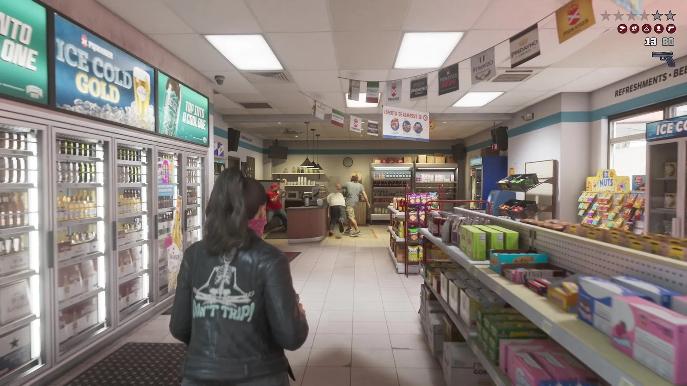
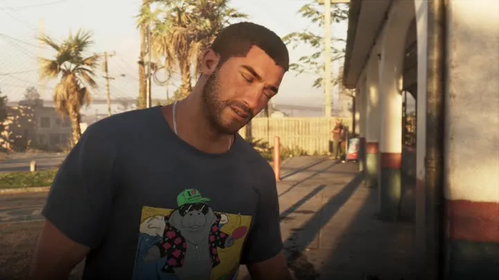
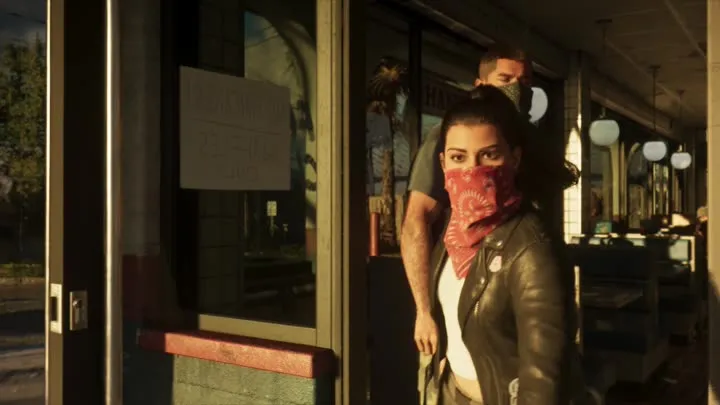
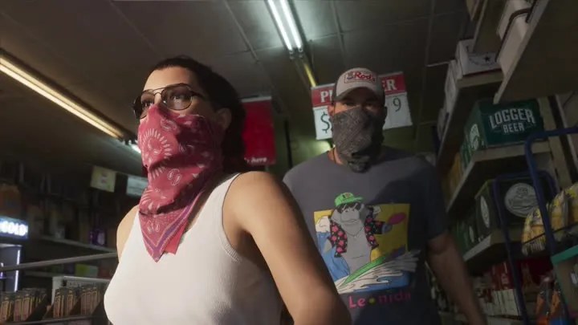
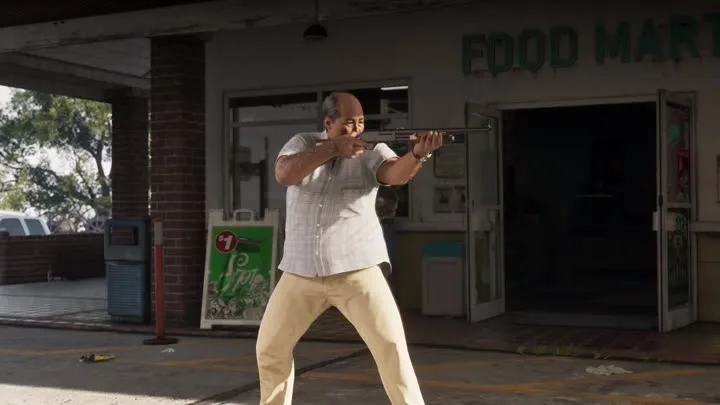

Ограбление магазина в GTA 6
Обновлено:

Ограбление небольшого магазина вдвоём — эпизод «Расширенного показа» и одна из механик, о которых рассказывали журналисты.
- Вывеска OPEN 7 DAYS.
- Банданы на лицах.
- Мужчина с ружьём у FOOD MART.
Подробно
С 11:27 «Расширенного показа» герои подходят к магазину с надписью OPEN 7 DAYS, натягивают банданы — Лусия красную — и грабят магазин. В финале эпизода (12:13) из магазина FOOD MART выходит мужчина с ружьём.
В первом трейлере (1:09) Лусия и Джейсон тоже грабят магазин в банданах. Про то, как Флорида защищает ночные магазины по закону, — отдельное сравнение.
Кадры




Где посмотреть
Таймкоды — чтобы найти момент в официальном видео Rockstar.
| Где | Что в кадре |
|---|---|
| «Расширенный показ», 11:46 | Внутри магазина |
| «Расширенный показ», 11:27 | У входа в магазин |
| «Расширенный показ», 11:34 | Лусия в красной бандане |
| «Расширенный показ», 11:57 | Двое в банданах в зале |
| «Расширенный показ», 12:13 | Мужчина с ружьём у FOOD MART |
По данным превью
Это рассказали журналисты, которые видели игру до релиза. Rockstar официально подробности не подтверждала.
Ограбить можно любой магазин — тихо, со взломом или со взрывчаткой.
GTABase и VICE (превью журналистов)
Ограбление магазина и реальность
На этой странице также: Ограбление магазинов (Механики).
Кадры и названия: Rockstar Games — трейлеры GTA VI, «Расширенный показ» (An Extended Look), официальные скриншоты. После релиза 19 ноября 2026 года дополним страницу данными из игры.
Каждый день — одно сравнение: кадр игры рядом с реальным фото. Подписывайтесь:
YouTubeInstagramTikTok